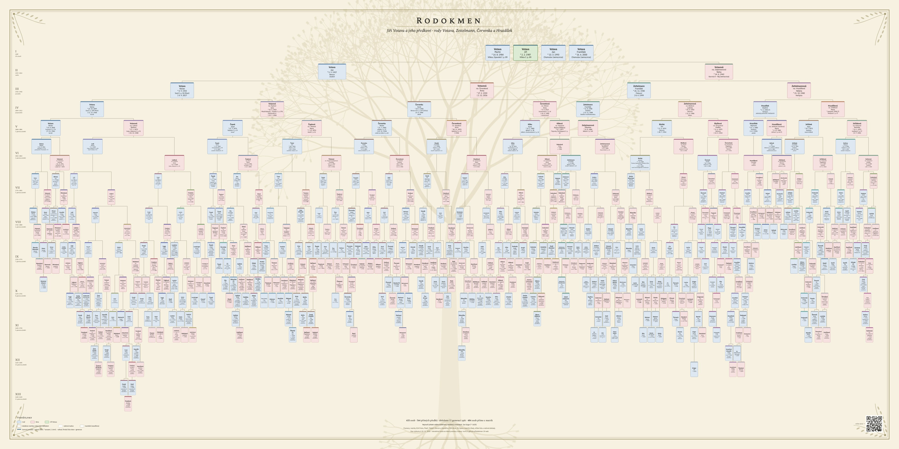

Hranice podle dnešních států (Natural Earth). Čáry vedou po tehdejších železničních tratích, kde přesná cesta není známa. Po najetí myší se ukáže, kdo a kdy. Přiblížení: tlačítka, dvojklik, Ctrl/⌘ + kolečko nebo sevření prstů; posun tažením.
Plakát ve formátu 2,5 × 1 m na šířku pro tisk. Nahoře je Jiří s bratry, pod nimi rodiče a dál všechny generace předků až k nejstarším zápisům v matrikách. Muži jsou v modrých rámečcích, ženy v růžových a barevný proužek nahoře ukazuje rodovou větev. Plnou čarou jsou orámovaní doložení předci, tečkovaně rodinná tradice a čárkovaně kandidáti. Dole jsou vysvětlivky, souhrn a QR kód na tento web.

Náhled je zmenšený. Klepnutím se otevře PDF, ve kterém jde přibližovat bez ztráty ostrosti a přečíst každý rámeček. Na prohlížení na počítači je PDF nejlepší, protože obrázky o velikosti 620 Mpx většina prohlížečů fotek při načítání zobrazí rozmazaně.
Načítám 3D…